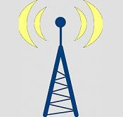
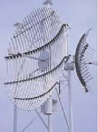
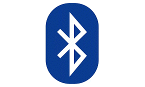
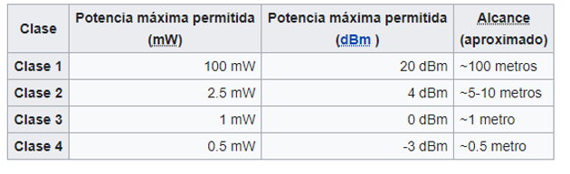

Los medios no guiados o comunicación sin cable transportan ondas electromagnéticas sin usar un conductor físico, sino que se radian a través del aire, por lo que están disponibles para cualquiera que tenga un dispositivo capaz de aceptarlas. En este tipo de medios tanto la transmisión como la recepción de información se lleva a cabo mediante antenas.
Ejemplos:
Radio frecuencia
Usos: utilizan en las radiocomunicaciones. Para comprender esta noción, por lo tanto, es necesario tener ciertos conocimientos sobre este tema.
Distancia: abarca desde los 3 kilohercios hasta los 300 gigahercios
Conectores: Los conectores microcoaxiales son soluciones de cable a placa de ultramicrominiatura, con un perfil tan bajo como 1,8 mm, lo que los convierte en ideales para pequeños dispositivos inalámbricos y portátiles

Microondas
Se refiere a la transmisión de datos o voz a través de radiofrecuencias con longitudes de onda en la región de frecuencias de microondas.
Distancia
En una primera etapa, se modula en FM una portadora de baja frecuencia, por ejemplo 70 MHz. En una segunda etapa, esta portadora modulada es mezclada con la portadora principal en frecuencia de GHz, por ejemplo 10 GHz.

Uso: pueden direccionarse múltiples canales a múltiples estaciones dentro de un enlace dado, o pueden establecer enlaces punto a punto.
Precio:Tiene un costo aproximado la antena de $50,876
Ventajas
Desventajas
Satelital
Un satélite puede definirse como un repetidor radioeléctrico ubicado en el espacio, que recibe señales generadas en la tierra, las amplifica y las vuelve a enviar a la tierra, ya sea al mismo punto donde se originó la señal u otro punto distinto.
Distancia: En las comunicaciones por satélite, las señales directas que gracias a la presencia en el Orbitan la Tierra a una distancia de 160-2000 km y su velocidad les permite dar una vuelta al mundo en 90 minutos.
Ventajas
Desventajas
Bluetooth

Usos

Ventajas
Desventajas
Laser
Uso: La transmisión de enormes masas de datos está haciendo llegar a sus límites la capacidad de la radiofrecuencia, por lo que empresas de todo el mundo están trabajando en una tecnología láser que pueda servir como sustituta, una idea que suena a una película de ciencia ficción más que a la realidad.
Velocidad:1,7 terabits por segundo (212,5 GB por segundo).
Lifi
Uso: transmisión de datos mediante luz visible o VLC (Visible Light Communication).
Velocidad de 42,8 Gbps de descarga, y en laboratorios se han conseguido 224 Gbps. Para ponerlo en contexto, en la charla TED de Hass se hablaba de 10 Mbps.
Distancia: 42,8 Gbps a una distancia de 2,5 metros
Ventajas
Desventaja
hay que estar iluminado y se necesitarían muchas bombillas
Si quieres sabe mas sobre medios de trasmision no guiados ve este video